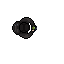
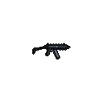
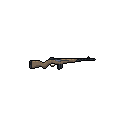
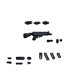
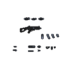
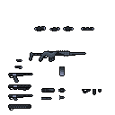
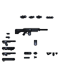
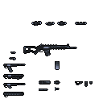

This section is a compelation of everything I am in the process of working on, as well as finished projects.
A "Retro" style, top-down tactical shooter game I developed as a solo project, inspired by titles like Hotline: Miami and Tom Clancy's: Rainbow Six Siege and others. With this being a project I have been developing by myself, I have exersised many skills in coding, sound design, art, UI, UX, and even marketing. This is the project I am most proud of from innitial conception, to it's current build, and future developments.
A Narrative RPG/Platformer game inspired by Nintendo's Zelda II: The Adventure of Link, and Super Paper Mario the story follows the character Naomi who will travel her world in search of a rare flower that can be used to cure the sickness that has begun to plauge her world. Along the way she will have to overcome trials, monsters, betrayal, and her own self-worth to complete her journey and save her people.
Overwrought is a narrative 3d platformer that I made in collaboration with members of my Gaming & Multimedia II class through Questar III. The game was made for the SkillsUSA video game design competition, with my role on the project being narrative design. The story revolves around main character, Eric, as he relives past memories in wake of his father's passing. The project taught me the importance of good team communication, and how to adapt a story to fit changing scopes. The Beta version of the game can be played here:
Under The Strip is a narrative puzzle game created as a final project for my Gaming & Multimedia I class through Questar III. The story of the game follows Jason Fisher, a recently unemployed man from Michigan during the time of the Korean War. With the help of his friend Carter, he and Jason would manage to make a fortune cheating at casino tables at the Golden Strip in Vegas. But Jason's luck would start to run out when the casino's owner catches wind of his tactics and Jason finds himself locked in the secret basement of the casino... The game was made in conjunction with 3 other classmates. My role on the project was Narrative Design, Level Design, Coding, and other small tasks, while the game is currently in a rough spot, with our group having only a month to work on it, I plan to return to it in the future.
A Dark-Fantasy novel I am writing. A teenage girl, Evelynn, seperated from her mother, sets out on a journey through the continents of Tsyphosia, Astreon, and Carour, with a selected group of other unique individuals to prevent a global war. That all becomes a lot harder once she learns that she is part of a bloodline that decends from the gods, and starts being hunted by world powers, monsters, and even... herself? The story of Silver Star has been a slow working passion project since I was in the 7th Grade, with a story taking on comparible scope to that of Lord of the Rings it has taken a long time to fully create the story. It could be possible at this point that the story will take on a new medium as a future game project rather than a novel, but that will be decided at a later date.
MESOS is a short story series focused around time traveling paleontoligists who are studying Dinosaurs in their natural enviornment, the series will have light-hearted and horror moments depending on which animal is the topic of the story. This project combines my love for dinosaurs, science fiction, and writing.
The Core is a new novel idea with a sci-fi space theme. The story revolves around the Big Bang Theory and it's effects on the greater vastness of space and the drifting of stars and galaxies away from one another. In the far future, the Milky Way Galaxy has drifted so far from the innitial creation of the universe that it is threatened to be swallowed by a black hole. This version of earth, united under one super country, sends a team of their most trusted scientists and astronauts to locate a new galaxy closer to the original "core" of the universe that can be habitable by Humans. Parallel to this story, another group stays on Earth, trying to keep the peace in the growing mass of panic as Earth grows ever closer to getting sucked into the black hole. None of these teams are ready for what they will find as they attempt to beat their doomsday clock.









